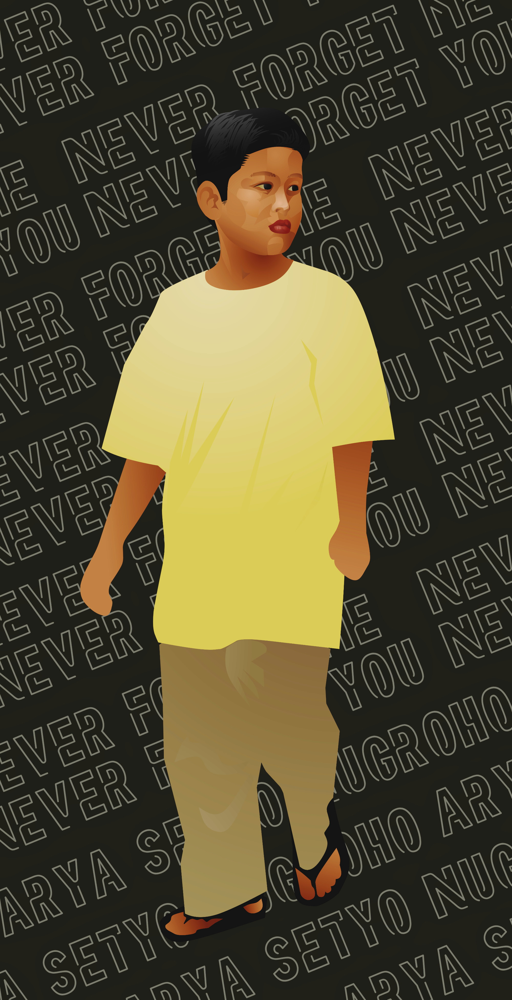

Berawal dari sikapku yg mulai bisa melupakannya. Tak disangka dia mulai sadar mana org yg selama itu peduli dgnnya entah karena do'a ku kah? tdk tau. kita berdua yg sepertinya sama2 mulai saling merindu lg. Bisa dilihat dari tatapan matanya setiap kali tak sengaja berpapasan dijalan aku langsung bisa menebak "pasti dia rindu".
Beberapa kali juga ku cuek, kmudian krna aku merasa kasian, coba kutanggapi tatapan itu dgn sedikit senyuman ngeledek. Sontak dia pun sorak sorai dgn teman2nya "whuuuuu" untungny saat itu ku sedang brkndara.
Esoknya aku coba mndkatinya dgn kusholat dimasjid dekat rumahnya, sempat ada konflik diantara kita bbrp hr: Dia mncoba mancing emosiku, mungkin dia ngetes gw bneran idiot/gila/bdoh apa gak wkwk
Yaa gw terima ujian itu dan, damn! Dia dgn ramai sama teman2nya meledekku. "Kannyaa main jgn sm anak kcil, lu tu dah GD p..." Kata gt Sialaaaan... Kuso! dgn Jari ngefakin gw lgih. entah knp esoknya mereka dtg ke tempatku dan akhirnya kusuruh mreka buat minta maap pasal semalam. Oke bbrp bocah mau, Ada yg enggak...
Berkat pertemuan itu kedepannya mulai membaik meski putus nyambung...
Gw mulai terbuka apa adanya dgn dia, dia pun trkadang masih ada rasa takut entah knp, sampe kubilang putus aja(krna gw ga sanggup dgn hubungan gajelas gini), nyatanya sampai skrg dia masih mau main samaku lg 😒.